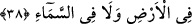
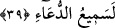

bırakırsan helâk olur, o zaman Muhammed’i de zâyi ve helâk etmiş olursun.”
Altın mâden olmadan çok önce
Senin sikken âlemde âşikârdı
38. “Ey Rabbimiz! Şüphesiz ki sen bizim gizlediğimizi de açıkladığımızı da
bilirsin. Çünkü ne yerde ne de gökte hiçbir şey Allah’a gizli kalmaz.”
“Ey Rabbimiz! Şüphesiz ki sen bizim” ihtiyaçlarımızdan ve başka şeylerden
“gizlediğimizi de açıkladığımızı da bilirsin.” İbrâhim (a.s.)’ın maksadı şudur: Bu
ihtiyaçları Sana bildirmem, onların Senin tarafından bilinmemesinden değil, aksine
ubûdiyeti ve Senin rahmetine muhtaç olduğumu göstermek ve yardımına hemen nâil
olmak içindir.
Boyun eğmek, kulluk ve mecburiyetten başkasına
Hazret-i ulûhiyette îtibâr yoktur
“Çünkü ne yerde ne de gökte hiçbir şey” gaybları/gizlilikleri çok iyi bilen “Allah’a”
devamlı olarak “gizli kalmaz.” Çünkü Allah Teâlâ’ya nisbetle geçmiş, gelecek ve
şimdiki zaman yoktur. O, zâtî bir ilimle bilir. Böyle bir bilgi bilinebilen her şeye eşit
olarak taalluk eder.
İster âşikâr olsun ister gizli
Sen’in bilgine göre birdir hepsi.
Allah’ın ilmi ârızî/sonradan meydana gelmiş ya da kazanılmış değildir ki insanların
ve meleklerin ilmi gibi bilinebilen bir şeyi bilirken başka şeyi bilmesin.
Hâsılı Sana hiçbir yerde, hiçbir şey gizli kalmaz. Dolayısıyla bizim faydamıza olan ne
ise bize onu yap.